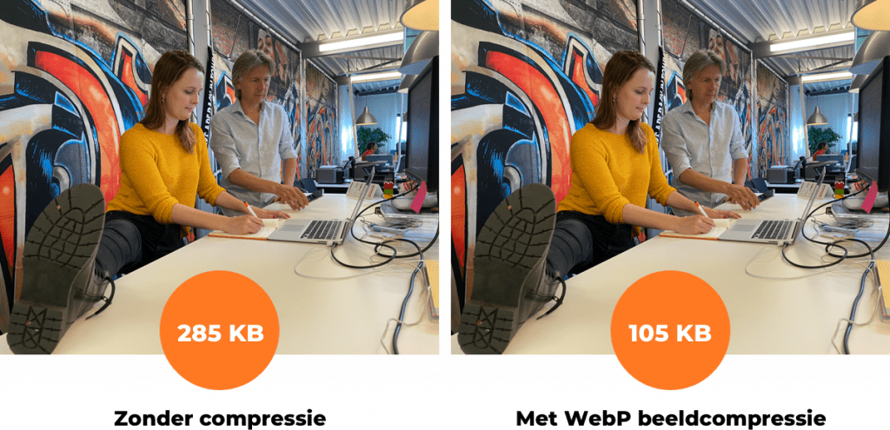

Beeldopslag
Beeldopslag bij compressietechnieken is een belangrijk onderdeel van digitale beeldverwerking en datamanagement. Het doel van beeldcompressie is om de hoeveelheid gegevens die nodig is om een afbeelding op te slaan en over te dragen te verminderen, zonder significant verlies van kwaliteit. Er zijn verschillende compressietechnieken die worden gebruikt, elk met zijn eigen aanpak en toepassingen.
Lossless compressie: Dit type compressie behoudt alle originele gegevens en resulteert in nul verlies in beeldkwaliteit. Het wordt vaak gebruikt voor medische beelden, technische tekeningen en tekstbestanden, waar elk detail cruciaal is. Populaire formaten zijn PNG en GIF.
Lossy compressie: Lossy compressie vermindert de bestandsgrootte door irrelevante informatie te verwijderen en enige kwaliteit te verliezen. Het wordt veel gebruikt voor fotografie en algemene beelden. JPEG is een veelgebruikt voorbeeld van een lossy compressieformaat.
Vectorcompressie: Dit type compressie is gebaseerd op wiskundige vectoren en wordt vaak gebruikt voor grafische afbeeldingen met eenvoudige geometrische vormen, zoals logo's en illustraties. SVG is een bekend voorbeeld van een vectorformaat.
Wavelet-compressie: Wavelet-compressie is geschikt voor beelden met zowel lage als hoge frequentiepatronen en wordt gebruikt in medische beeldverwerking en satellietbeelden. JPEG 2000 maakt gebruik van wavelet-compressie.
Beeldopslag bij compressietechnieken is cruciaal voor efficiënt datamanagement, opslagruimtebesparing en snelle gegevensoverdracht via internet. Het juiste compressieformaat wordt gekozen op basis van de aard van de afbeelding en de gewenste balans tussen bestandsgrootte en kwaliteit. Het begrip van verschillende compressietechnieken is essentieel voor grafische ontwerpers, fotografen en iedereen die met digitale afbeeldingen werkt.
Geluidopslag
Werking:Geluidsinformatie wordt opgeslagen als golfvormen die de variatie in luchtdruk in de tijd weergeven. Er zijn twee belangrijke parameters die van invloed zijn op de kwaliteit van geluidsopslag
Sampling
Geluidsgolven worden gesampled, wat betekent dat de amplitude (intensiteit) van de golf op regelmatige tijdsintervallen wordt gemeten. Hoe hoger de samplefrequentie, hoe gedetailleerder de weergave van het geluid.
Sample Rate
Dit is het aantal samples per seconde (uitgedrukt in Hertz, Hz). Een typische sample rate voor cd-kwaliteit geluid is 44,1 kHz, wat betekent dat 44.100 samples per seconde worden genomen.
Tekstcompressie
Werking:Tekstcompressie is het proces van het verminderen van de hoeveelheid opslagruimte die nodig is om tekst op te slaan. Er zijn verschillende technieken voor tekstcompressie
Lossless compressie:
Hierbij wordt tekst gecomprimeerd zonder verlies van informatie. Populaire formaten zijn bijvoorbeeld ZIP en GZIP. Deze compressiemethoden behouden de oorspronkelijke tekst zonder verlies van kwaliteit.
Lossy compressie:
Dit resulteert in een kleinere bestandsgrootte, maar met een zekere mate van kwaliteitsverlies. Bekende formaten zijn JPEG voor afbeeldingen en MP3 voor audio. Bij het comprimeren van tekst wordt vaak gebruikgemaakt van Huffman-codering en Run-Length Encoding.
